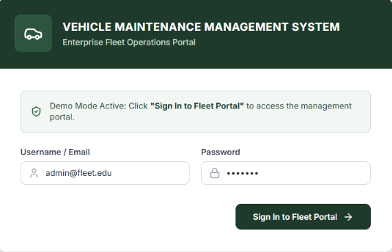
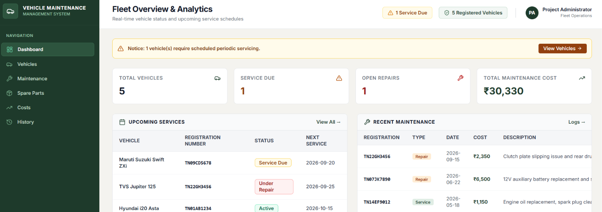
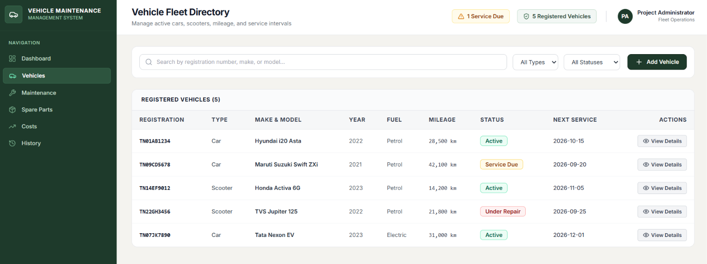
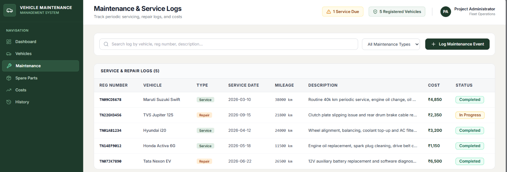
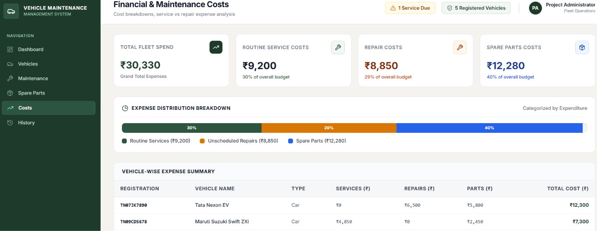

Featured engineering case study
Vehicle Maintenance Management System
A full-stack operational platform designed to streamline vehicle lifecycle management, automated service reminders, spare parts inventory, and maintenance expense tracking.
Problem & Motivation
Fleet operators, service centers, and independent vehicle owners frequently struggle with fragmented service histories, surprise maintenance costs, and inefficient manual logbooks. Without centralized tracking, routine servicing intervals like oil changes and brake inspections get overlooked, causing costly breakdowns and compromised safety.
The goal of this system was to provide a cohesive digital workspace that consolidates complete vehicle profiles, schedules proactive servicing based on mileage and elapsed dates, manages spare parts stock, and visualizes lifecycle expenditure.
Architecture & Implementation
I architected the platform as a modular client-server web application with strict separation between business logic, data persistence, and interactive user interfaces:
- Frontend Architecture: Developed using React 18 and Vite for fast development and bundling. Styled with Tailwind CSS for high data-density responsive layouts, and structured with dedicated views for vehicle rosters, maintenance schedules, inventory logs, and cost analytics.
- Backend REST API: Built with Node.js and Express, implementing structured routing, input validation middleware, error-boundary handling, and role-based permissions (Admin, Manager, and Technician).
- Data Modeling with Prisma & PostgreSQL: Designed normalized database schemas enforcing referential integrity across vehicles, maintenance tickets, spare parts inventory, and cost transactions. Used Prisma ORM for type-safe queries and migration management.
- Service Scheduling Engine: Built scheduling utilities that calculate next service due dates by evaluating current odometer readings against recurring service intervals.
Key Features
- Vehicle Directory: Centralized registry tracking VIN, license plates, make, model, year, and operational status.
- Role-Based Access Control: Distinct privileges for administrators, service managers, and technicians to safeguard sensitive records.
- Automated Maintenance Scheduling: Mileage and calendar-based triggers calculating required maintenance before component failure occurs.
- Spare Parts Inventory: Real-time tracking of parts stock levels, unit costs, and reorder threshold alerts.
- Cost Analytics & History: Complete chronological auditing of labor costs, part replacements, and overall vehicle lifecycle expenses.
Technology Stack
React 18 · Vite · Tailwind CSS · Node.js · Express · Prisma · PostgreSQL
Project Gallery





